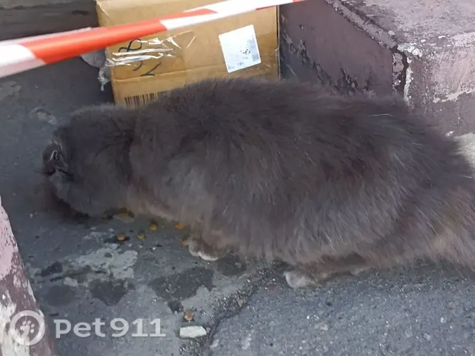
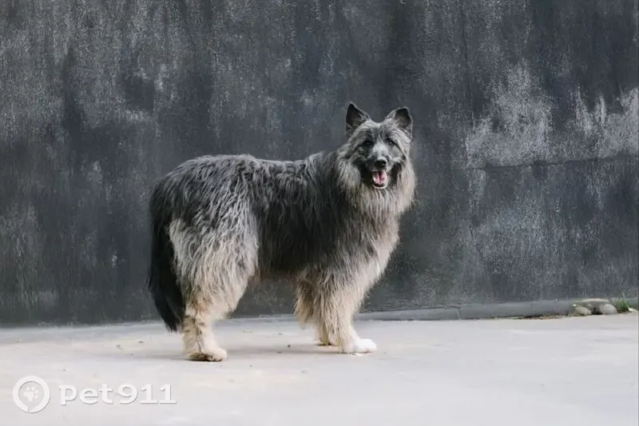
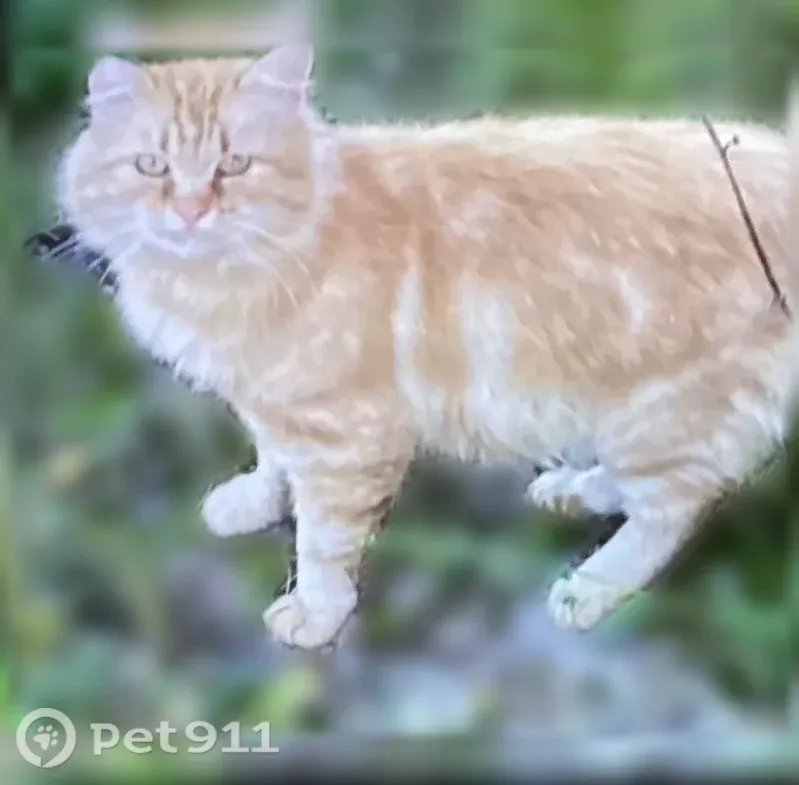
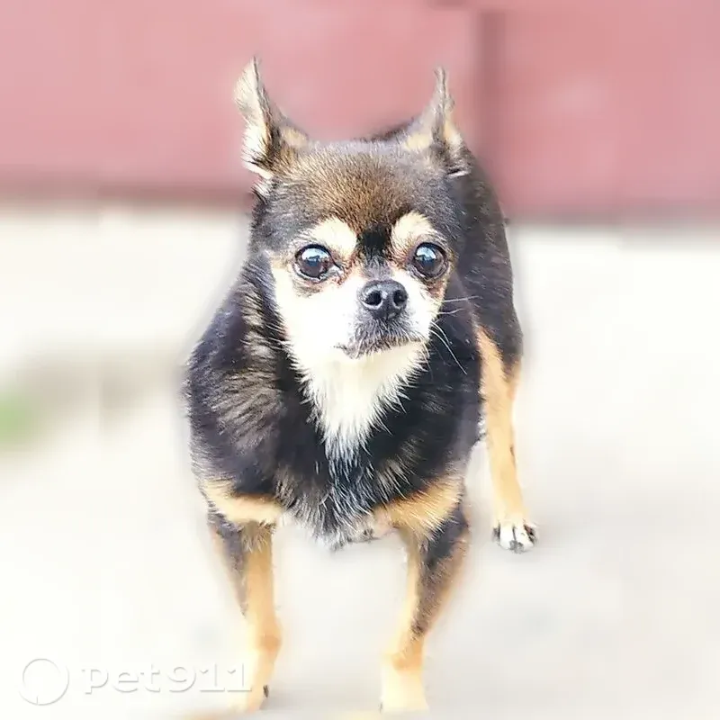

История идеи
За каждым поиском — чей-то друг.
Реальные истории пропажи и находки животных на улице.




С чего всё началось
Как помочь тем, кто потерял питомца, и тем, кто заметил его на улице, найти друг друга?
Фото: публичные объявления Pet911. Снимки иллюстрируют реальные случаи; текущий статус поиска может измениться.